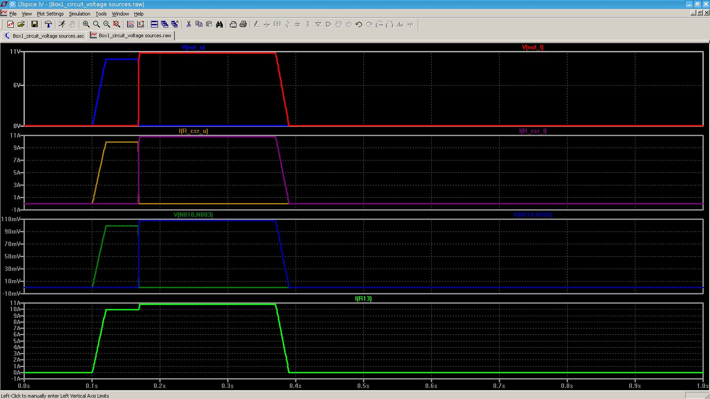

Description
Introduction
The item is an electrical box which selects from two independent DC power sources. The
two sources are diode-OR'd by Schottky diodes, and the voltage that exceeds
the other in addition to a power Schottky diode voltage drop supplies power to the outlet. The presence of voltage is indicated via LED, and the level of current flowing
through the box, is shown via LED bar graph. Each bar graph element corresponds to 1A of box load current. Specific requirements are shown below:
the other in addition to a power Schottky diode voltage drop supplies power to the outlet. The presence of voltage is indicated via LED, and the level of current flowing
through the box, is shown via LED bar graph. Each bar graph element corresponds to 1A of box load current. Specific requirements are shown below:
Requirements:
- Dual Independent Voltage Inputs
- 110VDC nominal
- 150VDC maximum
- 90V minimum (limited by internal +12VDC power supply)
- Current available
- 10A maximum (fused)
- Voltage Output
- 110VDC nominal
- 150VDC maximum
- 90V minimum (limited by internal +12VDC power supply)
- Environment
- Interfaces to household wiring
- Will see outdoor use
Circuit Schematic
Discussion:
A differential amplifier stage was used to amplify the voltage developed across a current sense resistor.
The differential amplifiers output a zero to 10V signal, corresponding to 0A to 10A of load current.
This signal is then fed into an LED bar graph driver IC, which activates the appropriate number of bars on the bar graph.
The presense of power LED's are controlled by an NPN BJT's.
Part numbers are for simulation purposes only. For example, unless a 15mA LED is choses, anomolous simulation results are produced.
Simulation Output

Application of 110VDC and then 120VDC, and the resulting load current. Also shown is the output of the differential amplifiers.
As shown in the simulation output, the load current rises to 11A, which in the real system will blow the fuse.
The simulation is run like this to show a definite transition between power sources.